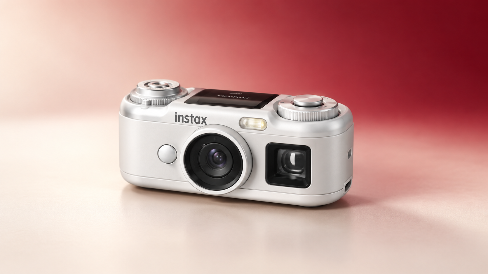
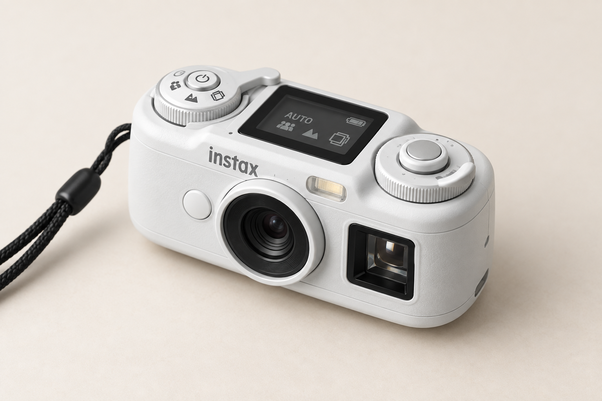
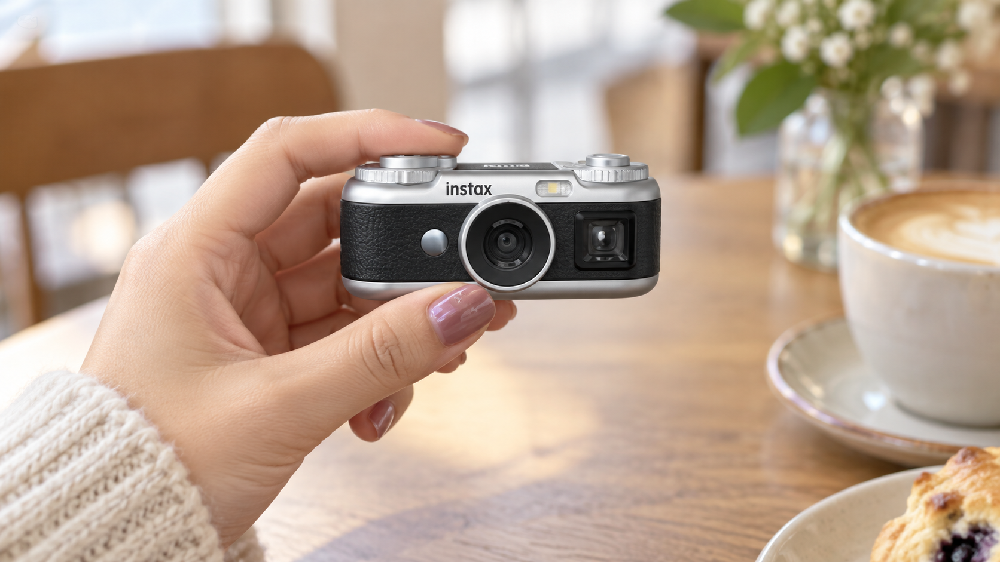

instax Pal 2はどんなカメラ？特徴・注意点・向いている人を整理
こんにちは、ろぶーです。
この記事ではAI生成の概念画像を使用しています。実製品・実景の写真ではありません。
手のひらサイズで「撮ること」を楽しむカメラ
富士フイルムは、手のひらサイズのデジタルカメラ「instax Pal 2」を2026年10月9日に日本で発売予定と発表しました。小さく持ち歩きやすい形は前モデルから受け継ぎつつ、撮影の楽しさを広げる機能が加わっています。
ただし、購入前に覚えておきたい大切な点があります。Pal 2は撮影用のデジタルカメラで、本体だけでは写真を印刷できません。まずは、何ができる製品なのかを落ち着いて整理します。

instax Pal 2の主な特徴
欧州向け公式発表で案内されている主な仕様は次のとおりです。
- 最大10メガピクセルで撮影
- 光学ファインダーを搭載
- 1.0インチの液晶画面
- Bluetooth 5.1でスマートフォンと接続
- USB Type-C端子を搭載
- microSDカードに対応（カードは別売り）
- アプリへ転送するまで本体に最大100枚を保持
- 5種類のフィルターテーマ、それぞれに6種類のエフェクト
- 10コマで動きのある表現を作るinstax Animation撮影モード

instax Pal 2 仕様表
| 日本発売予定日 | 2026年10月9日 |
|---|---|
| 価格 | オープン価格 |
| カラー | ブラック、ホワイト |
| 撮像素子 | 1/3.06型 CMOS原色フィルター |
| 記録画素数 | 10MP：3776×2832、1MP：1280×960 |
| レンズ | 35mm判換算28mm、F2.2 |
| 撮影可能距離 | 8cm～∞ |
| 内蔵メモリー | 10MPモードで約100枚 |
| 対応カード | microSD／microSDHC／microSDXC（最大2TB） |
| 接続 | Bluetooth 5.1、USB Type-C |
| 画面・操作 | 天面1.0インチ液晶、光学ファインダー、ダイヤル、レバー |
| 本体での印刷 | 非対応。対応プリンターなどが別途必要 |
利用には無料のinstax Palアプリが必要です。スマートフォンとの連携を前提に、気軽に撮影し、写真を転送して楽しむ製品と考えると分かりやすいでしょう。
本体だけでは印刷できない

Pal 2は、写真をその場で排出するインスタントカメラではありません。印刷したい場合は、対応するinstax Linkプリンターや対応機器、さらにフィルムを別に用意する必要があります。
そのため、費用を考えるときは本体価格だけでなく、プリンターとフィルムも含めて確認することが大切です。すでにinstaxのプリンターを持っている人と、最初から一式そろえる人では必要な予算が変わります。
向いている人
小さなカメラを気軽に持ち歩きたい人
スマートフォンとは別に、撮るための道具を持ちたい人には魅力があります。大きなカメラを持ち出すほどではない散歩や日常の記録で、軽快に使えることが特徴です。
すでにinstaxの印刷環境がある人
対応プリンターなどを持っていれば、撮影から印刷までの環境を組みやすくなります。Pal 2を撮影専用の小さな相棒として追加する考え方です。
画質競争より遊び方を重視する人
フィルターやAnimationモードなど、撮影後の楽しみ方を重視する人に向いています。スマートフォンより高性能かどうかではなく、専用機で撮る体験を楽しめるかが選ぶポイントです。
向かない可能性がある人
1台で撮影から印刷まで完結させたい人には合いません。また、細部まで高精細な写真を重視する人は、最大10メガピクセルという仕様と自分の用途が合うか確認した方がよいでしょう。
アプリが必要なので、対応スマートフォンや接続方法も購入前に確認が必要です。microSDカードも付属しません。
日本では2026年10月9日発売予定
日本向けの公式発表では、2026年10月9日発売予定、価格はオープン価格、カラーはブラックとホワイトの2色です。ストラップと角度調整アクセサリーが同梱され、専用カメラケースは2026年11月下旬発売予定と案内されています。
発売前後は旧型の「instax Pal」と検索結果が混在する可能性があります。購入時は、商品名に「Pal 2」と明記されていること、光学ファインダーと天面モニターを備えた新型であることを確認してください。
まとめ
instax Pal 2は、光学ファインダーや液晶画面、Animationモードを備え、持ち歩いて撮る楽しさを重視した小型デジタルカメラです。一方、本体だけでは印刷できず、利用にはアプリも必要です。
向いているのは、小さな専用カメラで気軽に撮りたい人や、すでにinstaxの印刷環境を持つ人。日本では2026年10月9日発売予定です。本体だけでは印刷できないため、必要に応じてプリンターやフィルムを含めた総額を確認するとよさそうです。
関連商品（広告／PR）
Pal 2で撮影した写真をチェキプリントにするには、対応プリンターとフィルムが別途必要です。
対応プリンター instax mini Link 3
スマートフォンへ転送した写真をチェキプリントにしたい人向けの関連商品です。
上のリンクはアフィリエイトリンクです。Pal 2本体は、正規商品ページを確認できるまで購入リンクを掲載しません。2026年10月9日の発売日に再確認します。
出典
https://www.fujifilm.com/de/en/news/fujifilm-introduces-instax-Pal-2-digital-camera
What Is the instax Pal 2? Features, Limitations, and Who It Suits
Hello, I'm Robu.
Article preview using AI-generated concept images. The images are not photographs of an actual product or location.
A palm-sized camera built around the act of taking pictures
FUJIFILM Europe has announced the instax Pal 2, a palm-sized digital camera. It keeps the portable idea of the original Pal while adding features intended to make shooting more enjoyable.
One point is essential before considering a purchase: the Pal 2 is a digital capture device and cannot print photographs by itself. Understanding that distinction makes the rest of the product easier to evaluate.
Main instax Pal 2 features
Fujifilm's European announcement lists the following highlights:
- Capture at up to 10 megapixels
- An optical viewfinder
- A 1.0-inch LCD
- Bluetooth 5.1 smartphone connectivity
- A built-in USB Type-C connector
- microSD card support; the card is not included
- Storage for up to 100 photos before transfer to the app
- Five filter themes with six effects each
- instax Animation shooting mode, which uses ten frames
The free instax Pal app is required. The product is therefore best understood as a small camera for taking photos and moving them to a smartphone, rather than a completely stand-alone system.
It does not print on its own
The Pal 2 is not an instant camera that ejects a print. Printing requires a compatible instax Link printer or other supported device, plus the appropriate film.
The real cost may therefore include more than the camera. Someone who already owns a compatible printer has a different starting point from a first-time buyer who needs the complete setup.
Who it may suit
People who want a tiny camera to carry every day
It may appeal to someone who wants a dedicated picture-taking tool in addition to a smartphone. The compact format is suited to walks and everyday moments when carrying a large camera would feel excessive.
Existing instax printer owners
People who already have a compatible printing setup can add the Pal 2 as a small capture device and use their current printer for physical photos.
People who value play over a specification race
The filters and Animation mode focus on experimentation. The useful question is not whether the camera beats a modern phone on every specification, but whether a separate, playful camera makes photography more enjoyable.
Who may want a different product
It is not suitable for someone who wants capture and printing in one device. Buyers who prioritize highly detailed images should also decide whether the maximum 10-megapixel specification is appropriate for their intended output.
Because the app is required, smartphone compatibility and the connection workflow should be checked before purchase. A microSD card is not included.
Scheduled for release in Japan on October 9, 2026
Fujifilm Japan has announced that the instax Pal 2 is scheduled for release in Japan on October 9, 2026. The suggested price is open, and black and white models are planned.
The camera itself is not yet linked here because an exact official Pal 2 listing has not been verified at the major Japanese stores. The purchase links will be checked again on the release date so an older instax Pal listing is never presented as the new model.
Conclusion
The instax Pal 2 is a compact digital camera focused on the pleasure of carrying and taking pictures. It adds an optical viewfinder, an LCD, and Animation mode, but it still requires an app and cannot print by itself.
It is most promising for people who want a tiny dedicated camera or already own an instax printing setup. Before buying in Japan, confirm the official release details and calculate the total cost of the camera, printer, and film that your preferred workflow requires.
Advertisement / Affiliate
The following is an affiliate link related to this article. This site may receive a commission if a qualifying purchase is completed through it.
Compatible printer: instax mini Link 3
For people who want to turn transferred photos into instax prints.
Products, prices, and availability may change. Check the latest information on the destination page. Exact Pal 2 purchase links will be added only after the new model is verified.
Sources
https://www.fujifilm.com/de/en/news/fujifilm-introduces-instax-Pal-2-digital-camera